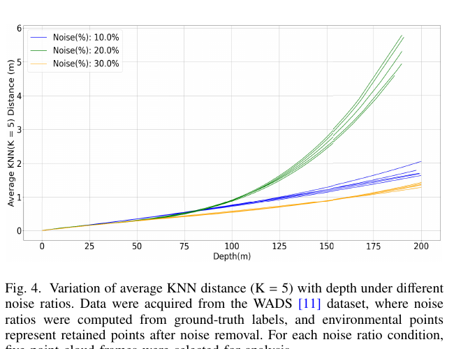
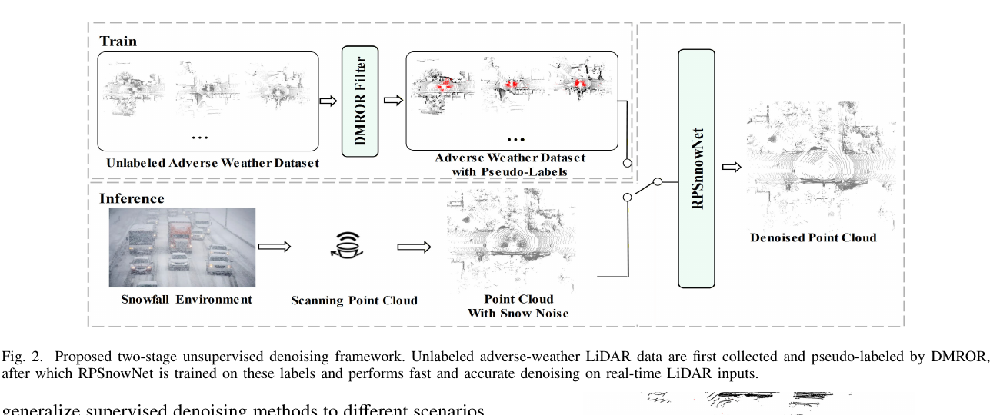
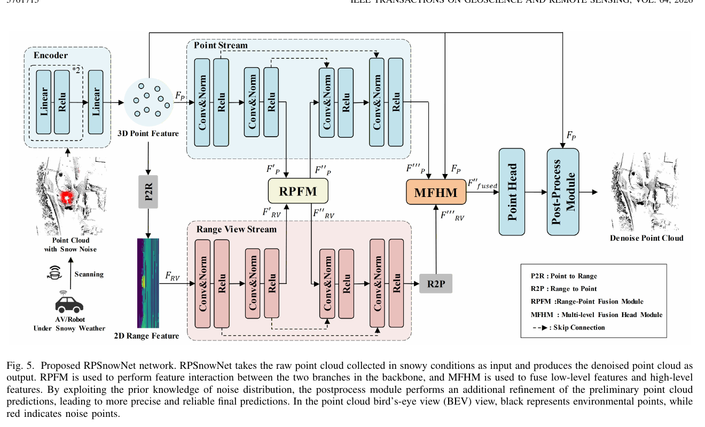
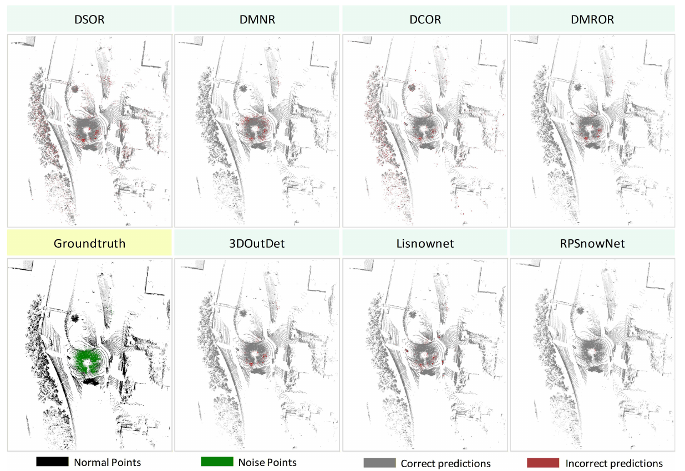
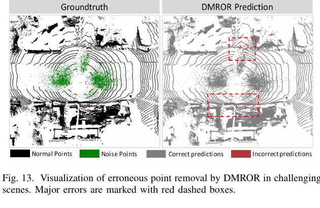

Robotics Research Reader · Stage 1
Unsupervised Snowy-Weather Point Cloud Denoising via Two-Stage Filter-Network Collaboration
材料覆盖范围：完整核对摘要、引言、相关工作、数据集综述、DMROR 与 RPSnowNet 方法、WADS/CADC 实验、下游任务、消融、参数敏感性、挑战案例、未来改进和结论，以及 Fig. 1–13、Table I–VIII、Algorithm 1。原文件为
Unsupervised_Snowy-Weather_Point_Cloud_Denoising_via_Two-Stage_Filter-Network_Collaboration.pdf。本页只还原当前 PDF 的论文故事线，不读代码、不用外部文献补写，也不做迁移或审稿判断。一、论文一句话在做什么
概括作者用 DMROR 在无标注雪天点云上自适应识别雪噪声并生成伪标签，再用这些标签训练轻量双分支 RPSnowNet，把滤波器的无监督性与神经网络的实时推理结合起来，目标是在不人工标注的情况下兼顾去雪准确率和 10 Hz LiDAR 系统所需的速度。 （Abstract；Sec. I；Fig. 2）
二、Research Problem
具体问题
在雪天 LiDAR 点云中去除被传感器当作有效回波的悬浮雪花点，同时保留真实场景结构。 （Abstract；Sec. I 第 1 段）
发生场景
自动驾驶与移动机器人等实时户外感知系统；近距离雪花可能比远处真实物体产生更强后向散射，从而形成近场密集噪声。 （Sec. I 第 1 段）
为何重要
可靠点云是实时感知基础，去雪方案需要同时满足无监督、快速处理和高准确率；推理延迟还应明显低于下游任务，以满足 10 Hz LiDAR 约束。 （Sec. I 第 3 段）
导致后果
雪噪声破坏点云结构并降低目标检测、场景生成和语义分割等下游算法表现。 （Abstract；Sec. I 第 1 段）
三、Existing Methods & Gap
| 作者讨论的方法 | 原本怎么解决 | 作者指出的具体不足 | 为何影响当前问题 |
|---|---|---|---|
| SOR / ROR | 以邻距统计或固定邻域密度删除离群点。 | 会误删天然稀疏的远距离环境点。 | 难以同时去雪和保留场景几何。 （Sec. II-A） |
| DROR / DSOR / LIOR / DCOR 等滤波器 | 随距离调整阈值，或利用强度、通道和密度先验。 | 作者总结其准确率仍有限、会误删有效点；最近邻搜索计算开销大，DCOR 低于 5 FPS。 | 无标签但难满足实时部署。 （Sec. II-A） |
| 通用点/Range/Voxel 语义分割 | 把去噪转成二分类语义分割。 | 点方法计算慢且空间建模弱；range projection 有 many-to-one 信息损失；voxel 方法计算量和分辨率依赖高；全场景分割网络对二分类去噪过于复杂。 | 实时去雪需要更轻的网络，同时要减少投影损失。 （Sec. II-B1） |
| 专用学习式去噪 | 用 range image、时序 KNN、频域或多视角网络识别天气噪声。 | 大多依赖完整人工标注，而真实雪天逐点标签稀缺；作者指出无监督与监督方法之间仍有明显性能差距。 | 标注不足限制真实无标签场景泛化。 （Sec. II-B2） |
| 仿真雪数据 | 在晴天点云上用物理模型生成雪噪声。 | 仿真噪声尤其在强度上偏离真实雪，不能完全替代真实数据，也不适合依赖 intensity 的方法。 | 无法仅靠仿真解决跨场景与跨传感器标注问题。 （Sec. II-C） |
作者认为真正缺少的东西
概括真正缺少的是一种不用人工逐点标注、能适应不同雪强并保留环境结构，同时又能以远高于 10 Hz 的速度部署的准确去雪方法。 （Sec. I 第 2–4 段；Sec. II-B2）
四、Core Observation / Insight
观察 1：雪噪声的可用先验
雪噪声主要集中在低强度、近距离、低高度区域；近距离雪花还可能遮挡环境点。 （Sec. I 方法概述；Sec. III-B）
如何引出算法：DMROR 先用强度、距离和高度阈值得到候选雪点，并以其占比估计当前 noise ratio。 （Sec. III-B；Eq. (1)）
观察 2：雪强改变环境点密度规律
WADS 中重雪帧 active snow 占 42.1%，中雪帧为 12.6%；Fig. 4 显示环境点平均 KNN 距离与深度的关系随 noise ratio 变化，而且是非线性的。 （Sec. III-B；Figs. 3–4）
如何引出算法：搜索半径不再只按距离线性变化，而由距离、传感器水平角分辨率和估计噪声比例共同决定。 （Eqs. (2)–(3)）

概括由这些观察形成的方法 insight 是：先让慢但无需标签的滤波器把雪强适应性先验转成伪标签，再让轻量网络学习并承担在线推理，从而分开解决“标签从哪里来”和“部署时怎样快”。 （Sec. I 方法概述；Fig. 2；Sec. III-A）
五、Method：只看宏观逻辑
Input：无标注雪天点云。训练阶段输入未标注 adverse-weather LiDAR scans；部署阶段输入实时雪天扫描。 （Fig. 2；Sec. III-A）
Stage 1：DMROR 生成伪标签。以低强度、近距离、低高度先验筛候选雪点，估计 noise ratio；再按 noise ratio 与点到传感器距离生成非线性搜索半径，以邻居数判定雪点，并取两次判定的交集。作者这样做是为适应雪强引起的环境密度变化。 （Sec. III-B；Algorithm 1；Eqs. (1)–(3)）
Stage 2：RPSnowNet 学习伪标签。point branch 保留细粒度点特征，range branch 提供高效空间建模；RPFM 在中间跨分支交互，MFHM 融合低层细节与高层语义。作者这样做是为兼顾投影效率和点级精度。 （Sec. III-C1–3；Figs. 5–7）
Postprocess。网络预测可调整的强度、距离和高度先验参数，并与初始先验加权融合，用于细化初步预测；作者这样做是为在稳定先验与场景适应之间折中。 （Sec. III-C4；Fig. 8；Eq. (11)）
Output：去噪点云。部署时只运行 RPSnowNet，DMROR 的慢速近邻计算在训练前完成。 （Fig. 2；Sec. IV-C1）


相比已有方法，核心变化在哪里
概括核心变化不只是新滤波器或新网络，而是把二者串成“滤波器离线造标签、网络在线去噪”的协同流程；其中 DMROR 首次在本方法内把估计雪噪比例加入非线性搜索半径，RPSnowNet 则用 point-range 双分支减少单一 range projection 的损失。 （Sec. III-A–C）
六、Contributions
- Method：提出两阶段无监督去噪框架，第一阶段自适应滤波器精确识别噪声并生成伪标签，第二阶段轻量网络学习这些标签以实现准确、快速去雪。 （Sec. I，Contribution 1）
- Method / Modeling：提出雪强自适应 DMROR，利用雪噪声低强度、近距离特征估计雪强并动态调整过滤参数，为第二阶段提供高质量伪标签。 （Sec. I，Contribution 2）
- System / Efficiency + Experiment：设计面向二分类与实时需求的 RPSnowNet；作者报告其在 WADS 上达到无监督 SOTA、超过 66 FPS，并改善 3D 语义分割和目标检测。 （Sec. I，Contribution 3）
七、Experiments
| Dataset | WADS：1929 帧、64-beam、逐点标注，用于定量去噪和语义分割；CADC：32-beam、3D box 标注，无逐点雪噪标签，用于定性去噪和 3D 检测。 （Sec. IV-A1；Table I） |
|---|---|
| 与哪些方法比较 | 滤波器 ROR、SOR、DROR、DSOR、DIOR、DMNR、DCOR；学习方法 SalsaNext、Cylinder3D、WeatherNet、4DenoiseNet、3DOutDet、TripleMixer、LiSnowNet。 （Sec. IV-C1；Table III） |
| 评价指标 | 去噪：Precision、Recall、F1、mIoU、runtime；检测：AP3D、APBEV、APR40，按 easy/moderate/hard；分割：逐类 IoU 与 mIoU。 （Sec. IV-A2；Eqs. (15)–(18)） |
| 硬件/环境 | DMROR/RPSnowNet 等在 Xeon Silver 8369C、A6000、256 GB RAM 上；多数其他速度引自 3DOutDet 的 Xeon Silver 4210R、A6000、192 GB RAM；Ubuntu 20.04。 （Sec. IV-C1） |
| 消融实验 | 有。组件消融（point branch、RPFM、MFHM、postprocess）与不同滤波器伪标签来源消融。 （Sec. IV-E；Tables VII–VIII） |
| 参数实验 | 有。按低/中/高 noise ratio 分组分析 DMROR，并对手动阈值与拟合参数做 ±5%、±10%、±15% 扰动。 （Sec. IV-C2；Sec. IV-F；Table IV；Fig. 12） |
| 定性/定量 | 两者都有。WADS 有 GT 定性与完整定量；CADC 去噪为定性，并以 3D box 做检测下游定量。 （Sec. IV-B–D；Figs. 9–11；Tables III–VI） |
实验 1：WADS 去噪主结果。
结果：DMROR 为 Precision 95.22%、Recall 92.24%、F1 93.71%、mIoU 88.06%、897 ms；RPSnowNet 为 96.43%、91.94%、94.13%、88.92%、15 ms。RPSnowNet 在无监督方法中 Precision、F1、mIoU 最优；监督 TripleMixer 的 mIoU 为 90.73%。
作者据此得出的结论：两阶段框架在保留无监督属性时，把在线推理提升到超过 66 FPS，精度接近监督 SOTA。
来源：Sec. IV-C1；Table III；Fig. 1。
结果：DMROR 为 Precision 95.22%、Recall 92.24%、F1 93.71%、mIoU 88.06%、897 ms；RPSnowNet 为 96.43%、91.94%、94.13%、88.92%、15 ms。RPSnowNet 在无监督方法中 Precision、F1、mIoU 最优；监督 TripleMixer 的 mIoU 为 90.73%。
作者据此得出的结论：两阶段框架在保留无监督属性时，把在线推理提升到超过 66 FPS，精度接近监督 SOTA。
来源：Sec. IV-C1；Table III；Fig. 1。

实验 2：不同雪强与参数敏感性。
结果：DMROR 在 low/moderate/high snow ratio 上的 mIoU 分别为 87.54%、87.07%、89.40%；手动阈值扰动后的 mIoU 为 86.97%–88.05%，拟合参数为 87.62%–88.05%，默认值为 88.06%。
作者据此得出的结论：DMROR 在统一参数下能适应不同雪强，且不依赖精细参数调优。
来源：Sec. IV-C2；Sec. IV-F；Table IV；Fig. 12。
结果：DMROR 在 low/moderate/high snow ratio 上的 mIoU 分别为 87.54%、87.07%、89.40%；手动阈值扰动后的 mIoU 为 86.97%–88.05%，拟合参数为 87.62%–88.05%，默认值为 88.06%。
作者据此得出的结论：DMROR 在统一参数下能适应不同雪强，且不依赖精细参数调优。
来源：Sec. IV-C2；Sec. IV-F；Table IV；Fig. 12。
实验 3：下游语义分割与 3D 检测。
结果：去噪后 Cylinder3D 与 PolarNet 的 mIoU 分别提高 2.28 和 3.91 个百分点；检测中 car、pedestrian、pickup truck 的最大 AP3D 增益分别为 16.4、6.0、3.5 个百分点，最大 APBEV 增益为 10.2、4.6、3.3 个百分点。
作者据此得出的结论：作者认为去噪提高了 LiDAR 量测完整性与下游感知鲁棒性，收益主要出现在近距离。
来源：Sec. IV-D；Tables V–VI；Fig. 11。
结果：去噪后 Cylinder3D 与 PolarNet 的 mIoU 分别提高 2.28 和 3.91 个百分点；检测中 car、pedestrian、pickup truck 的最大 AP3D 增益分别为 16.4、6.0、3.5 个百分点，最大 APBEV 增益为 10.2、4.6、3.3 个百分点。
作者据此得出的结论：作者认为去噪提高了 LiDAR 量测完整性与下游感知鲁棒性，收益主要出现在近距离。
来源：Sec. IV-D；Tables V–VI；Fig. 11。
实验 4：网络组件消融。
结果：range-only 基线为 42.51% mIoU；加 postprocess 为 44.04%；再加 point branch 为 87.31%；加入 RPFM、MFHM 后依次为 88.32%、88.92%。postprocess、RPFM、MFHM 对相邻配置的增益分别为 1.53、1.01、0.65 个百分点。
作者据此得出的结论：point branch 主要弥补 range branch 的 many-to-one 映射问题，其余模块进一步优化跨分支与多层融合。
来源：Sec. IV-E1；Table VII。
结果：range-only 基线为 42.51% mIoU；加 postprocess 为 44.04%；再加 point branch 为 87.31%；加入 RPFM、MFHM 后依次为 88.32%、88.92%。postprocess、RPFM、MFHM 对相邻配置的增益分别为 1.53、1.01、0.65 个百分点。
作者据此得出的结论：point branch 主要弥补 range branch 的 many-to-one 映射问题，其余模块进一步优化跨分支与多层融合。
来源：Sec. IV-E1；Table VII。
实验 5：伪标签来源。
结果：以 DROR、DSOR、DMNR、DMROR 伪标签训练 RPSnowNet，mIoU 相比原滤波器分别提高 13.0、15.2、12.8、0.8 个百分点；最终 DMROR + RPSnowNet 为 88.9%。
作者据此得出的结论：最终增益来自较高质量 DMROR 伪标签与 RPSnowNet 的协同，网络对较弱伪标签也能带来更大提升。
来源：Sec. IV-E2；Table VIII。
结果：以 DROR、DSOR、DMNR、DMROR 伪标签训练 RPSnowNet，mIoU 相比原滤波器分别提高 13.0、15.2、12.8、0.8 个百分点；最终 DMROR + RPSnowNet 为 88.9%。
作者据此得出的结论：最终增益来自较高质量 DMROR 伪标签与 RPSnowNet 的协同，网络对较弱伪标签也能带来更大提升。
来源：Sec. IV-E2；Table VIII。
八、Limitations
作者明确承认的 limitation
DMROR 在积雪植被附近会误删有效环境点，因为覆雪枝叶与真实雪噪声在弱强度、局部稀疏和不规则几何上高度重叠。 （Sec. IV-G；Fig. 13）
拟合参数在传感器或数据集设置变化时需要重新估计；CADC 与 WADS 使用不同参数。 （Sec. III-B；Table II；Sec. IV-F）
CADC 缺少逐点标签，因此该数据集上的去噪只能定性评估，不能直接计算去噪 mIoU。 （Sec. IV-A1；Sec. IV-B）

从实验结果中直接可见、但作者没有明确称为 limitation 的现象
直接观察Table III 中 RPSnowNet 的 Recall 91.94% 略低于 DMROR 的 92.24%，也低于监督 TripleMixer 的 93.93%；作者主要强调其 Precision、F1、mIoU 与速度。 （Table III）
直接观察Fig. 11 显示去噪对车辆近距离检测提升明显，而在长距离处变化很小；作者在正文中也只把总体结论限定为近距离收益显著。 （Sec. IV-D；Fig. 11）
九、Future Work / Research Implications
针对覆雪植被误删，作者提出两条未来改进：利用连续 LiDAR 帧的时间一致性区分持久环境结构与瞬时雪噪声；加入邻域强度不确定性/方差，以利用覆雪植被局部强度更分散的特征。 （Sec. IV-G）
十、论文逻辑链
概括近场雪花回波被 LiDAR 当作有效点，破坏点云并影响检测、分割等实时感知。 （Sec. I 第 1 段）
概括滤波器不需标签，学习方法推理快且更准。 （Sec. I 第 2 段）
概括滤波器最近邻计算慢且误删，学习方法依赖稀缺逐点标注，仿真数据又与真实强度分布有差异。 （Sec. I–II）
概括雪噪声偏低强度、近距离、低高度，而且雪强会非线性改变环境点密度随距离的变化。 （Sec. III-B；Figs. 3–4）
概括用雪强自适应滤波器离线生成伪标签，再用轻量网络学习并在线运行。 （Fig. 2；Sec. III-A）
概括DMROR 候选筛选 + noise ratio + 非线性半径 → 伪标签；RPSnowNet point/range 双分支 + RPFM/MFHM + 自适应后处理 → 去噪点云。 （Secs. III-B–C；Figs. 5–8）
概括WADS 做主定量、CADC 做跨传感器定性与检测；另做下游、组件、伪标签来源、雪强和参数敏感性实验。 （Sec. IV）
概括作者结论是两阶段框架达到无监督去雪 SOTA 和 15 ms 在线推理，并改善下游分割与检测。 （Sec. V）
十一、第一遍阅读结束后，我应该记住的东西
- 概括这篇论文解决无人工逐点标注条件下，雪天 LiDAR 去噪精度与实时性难以兼得的问题。 （Sec. I）
- 概括核心 gap 是滤波器无监督但慢且会误删，深度网络快而准确却依赖稀缺标注。 （Sec. I–II）
- 关键 observation 是雪噪声偏低强度、近距离、低高度，并且雪强会改变环境点密度—距离关系，该关系不是简单线性的。 （Sec. III-B；Fig. 4）
- 概括最核心变化是让 DMROR 负责离线伪标签，让 RPSnowNet 负责在线快速推理，并用 point-range 双分支兼顾细节与效率。 （Figs. 2、5）
- 最重要结果是 RPSnowNet 在 WADS 达到 88.92% mIoU、15 ms，在无监督方法中取得最佳 Precision/F1/mIoU，并提升下游分割和检测。 （Table III；Tables V–VI）
十二、暂时不要深入的内容
- DMROR 的 noise ratio、非线性 radius 公式与参数拟合过程。 （Sec. III-B；Eqs. (1)–(3)；Algorithm 1）
- point-to-range / range-to-point 映射以及 RPFM 的 multihead cross-attention。 （Sec. III-C1–2；Eqs. (4)–(8)；Fig. 6）
- MFHM 的加权融合与 postprocess 的 α0/αpr 参数预测。 （Sec. III-C3–4；Eqs. (9)–(12)；Figs. 7–8）
- point/range/auxiliary 三部分 loss 的具体优化关系。 （Sec. III-C5；Eqs. (12)–(14)）
- WADS/CADC 的精确划分、DMROR 跨数据集参数与所有基线的公平性条件。 （Sec. IV-A3；Table II）
- Table V–VIII 的逐类下游结果和完整消融数字。 （Sec. IV-D–E）